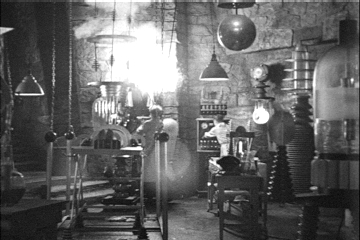

block ::= (valdef | fundef)* expr
expr ::= expr2 | "if" "(" expr ")" block "else" block
expr2 ::= term (( "+" | "-" ) term)*
term ::= factor (( "*" | "/" ) factor)*
factor ::= wholeNumber | "(" expr ")" | ident | funcall | funliteral
funcall ::= ident "(" (expr ("," expr)*)? ")"
funliteral ::= "{" (ident ("," ident)*)? "=>" block "}"
valdef ::= "val" ident "=" expr ";"
fundef ::= "def" ident "=" funliteral ";"
if fakes Boolean similar to C: > 0 is true, <= 0 is false{ ident, ident, ... => block }val a = 3; val b = 4; a * a + b * b
val max = { x, y => if (x - y) x else y };
max(3, 4)
val threeTimes = { f, x => f(f(f(x))) };
threeTimes({x => x * x}, 2)
def fac = { x => if (x) x * fac(x - 1) else 1 };
fac(10)
Expr (as before) / BlockBlock is sequence of definitions, followed by one expressioneval(Expr)
if / elseMap[String, Int] for the symbol table.Int (i.e. functions)Anyval a = 3;
val fun = { x => val a = 2; a * x };
a * fun(4)
List[(String, Any)] instead::((a, 2), (x, 4), (a, 3))
find to find the first match:
symbols.find(_._1 == name) match {
case Some(pair) => pair._2
case None => None
}
eval of an expression yields a valueInt or a function
val a = 3 * b;
val sq = { x => x * x };
def eval(expr : Expr, symbols : List[(String, Any)]) : Any =
expr match {
case Number(num) => num
case Variable(name) => ... // find name in symbols
case Operator(left, right, f) => ...
// was f(left, right), but now we don't know they are Int
case IfExpr(cond, block1, block2) => ...
...
}
def evalDef(symbols : List[(String, Any)], defn : Valdef) = (defn.name, eval(defn.expr, symbols)) :: symbols
def evalBlock(block : Block, symbols : List[(String, Any)]) : Any =
eval(block.expr, (symbols /: block.defs) { evalDef(_, _) } )
Visualize foldLeft with two definitions: (red fringe = list of defs)
symbols
for expr
/ \
augmented 2nd
symbols def
/ \
original 1st
symbols def
variable and function(args)Funcall, else a Variable
def valOrFuncall = valOrFun ~ opt( "(" ~> repsep(expr, ",") <~ ")" ) ^^ {
case expr ~ Some(args) => Funcall(expr, args)
case expr ~ None => expr
}
{ x => x * x } is a function literal, { x => x * x }(3) is a function call.
def valOrFun = "(" ~> expr <~ ")" |
ident ^^ { Variable(_) } |
funliteral
def funliteral: Parser[Expr] = ("{" ~> repsep(ident, ",") <~ "=>") ~ expr <~ "}" ^^ {
case params ~ expr => Function(params, expr)
}
repsep(ident, ",")matches comma-separated list of ident, yielding a List[String] (with the separators discarded) { x, y => (x + y) / 2 }(10, a + 2)x -> eval(10)
y -> eval(a + 2)
def eval(expr : Expr, symbols : List[(String, Any)]) : Any =
expr match {
case Funcall(fun, args) => eval(fun, symbols) match {
case Function(params, body) =>
evalBlock(body, params.zip(args.map(eval(_, symbols))) ::: symbols)
}
params.zip(args) makes a list of pairs ((p1, a1), (p2, a2), ...)map takes care of that
lab11/report.txt inside the Git repo. Include the coder's name in the report! lab11 and add this Scala code. Run the four SL1 programs from slide 3. What outputs do you get?pow2 to compute 2n for a given n, then calls pow2(10). What is your program and what is its output?For each of the following SL1 expressions and blocks, draw a parse tree. That should be the tree returned by parser.parse(...).get. Write the tree sideways with indentations, like this for the expression x * (y + 1). Use - for indentations so they don't get lost in your report.
Feel free to modify the program to print the parse tree.
Operator -Variable(x) -Operator --Variable(y) --Number(1) --<add function> -<multiply function>
{ x, y => x + y }fac(x - 1)val sq = { x => x * x } ; sq(2)For each of the following scenarios, write the symbol table. Write it as a set of equations, like this
a = 3
sq = { x => x * x }
a = 2
where the newest symbols appear at the bottom. In our example, the last definition of a shadows the previous one. Note that each variable is bound either to an integer or a function.
val a = 3 ; val b = a + 1; val a = 2 ; a + b val a = 3; val sq = { x => x * x } ; sq(a + 2). Be sure to show the binding for x.val a = 3; val x = 2; { x => a * x } (a)Confirm your guesses for 2 and 3 with this trick. Define a function
def spy[T](t : T) = { println(t); t }
Then add a spy(...) call around
params.zip(args.map(eval(_, symbols))) ::: syms
in the evaluation of a Funcall.